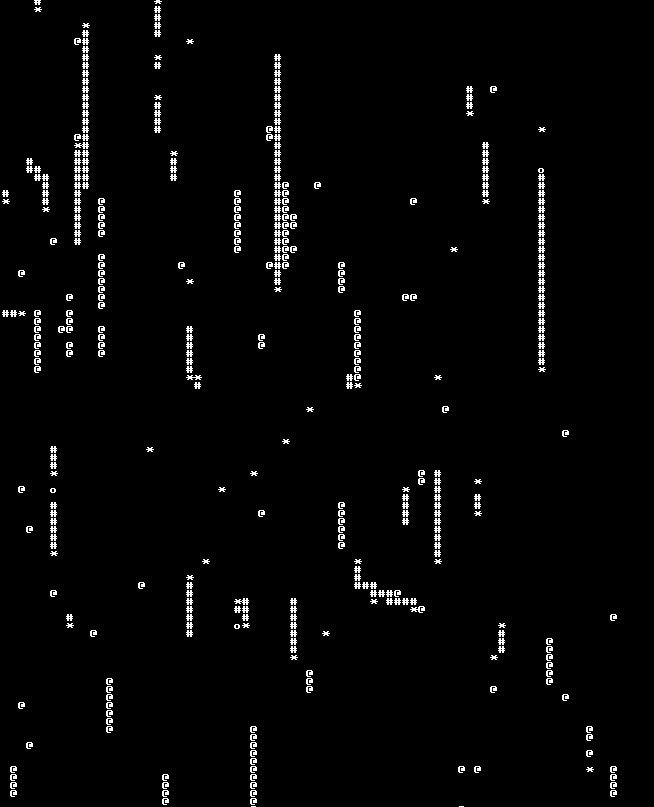

Collège val-de-la-sensée à Arleux
Option euro-anglais, Allemand LV2
Je m'appelle Thomas Bricout, je suis lycéen et je cherche une école d'informatique. Passioné de tout ce qui y touche de près comme de loin, je m'intéresse par moi-même à ces
Option euro-anglais, Allemand LV2
Section Abibac (section binational allemande), Option Chinois,
Spécialités Mathématiques, Physique-Chimie et SVT ( abandonnée )
Avec des camarades, j'ai eu l'opportunité de réfléchir à des questions mathématiques et
de présenter nos résultats au congré de valencienne en mars 2023, notre question était:
Quel est le nombre le plus grand que l'on peut obtenir avec uniquement un certain
nombre de un, l'addition et la multiplication?
Auxquelles j'ai fini à renseigner.
Robberty est un jeu vidéo que j'ai développé puis publié en 3 jours en octobre 2022 sur itch.io pour la score space jam #23, concours où j'ai fini #53 sur 139 soumissions. Il a été fait avec Godot ( Moteur de jeu vidéo orienté objet ) en godotscript et des assets libres de droits.

Intelligentsnakes est un projet inspiré des bibites et autres simulations d'êtres vivants qui répond à la question suivante: et si on donnait un cerveau à snake et laisser la sélection naturelle décider de son comportement? écrit en rust en mars 2023. Il peut être compilé de la source. (non testé sous windows).
